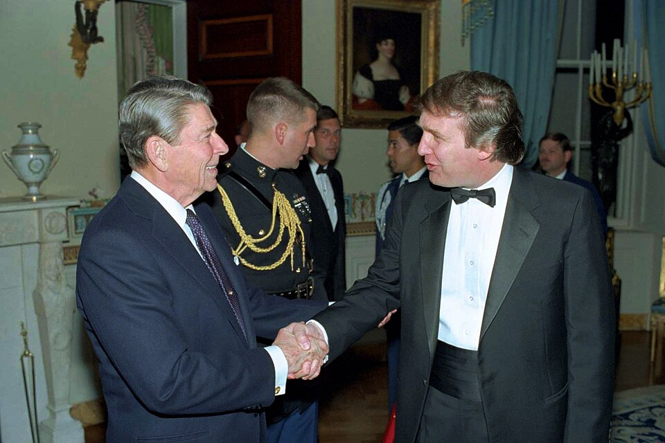
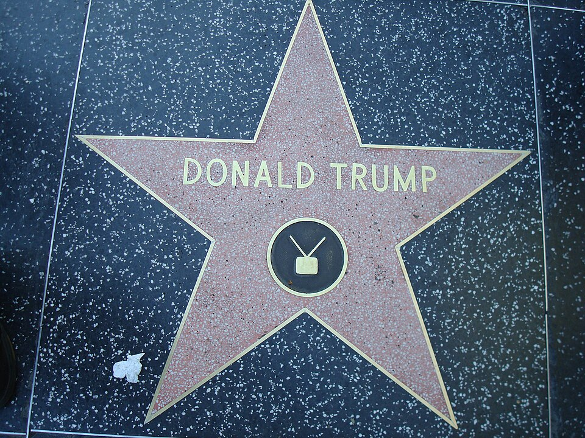
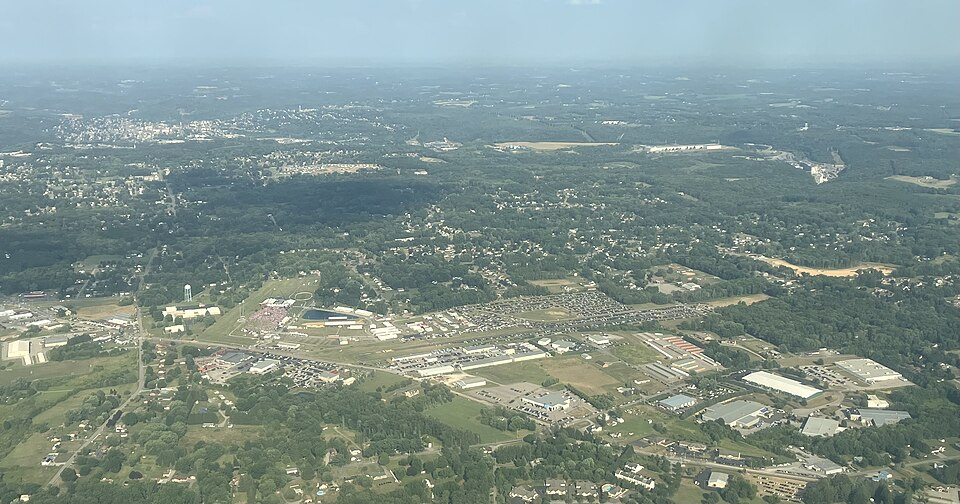
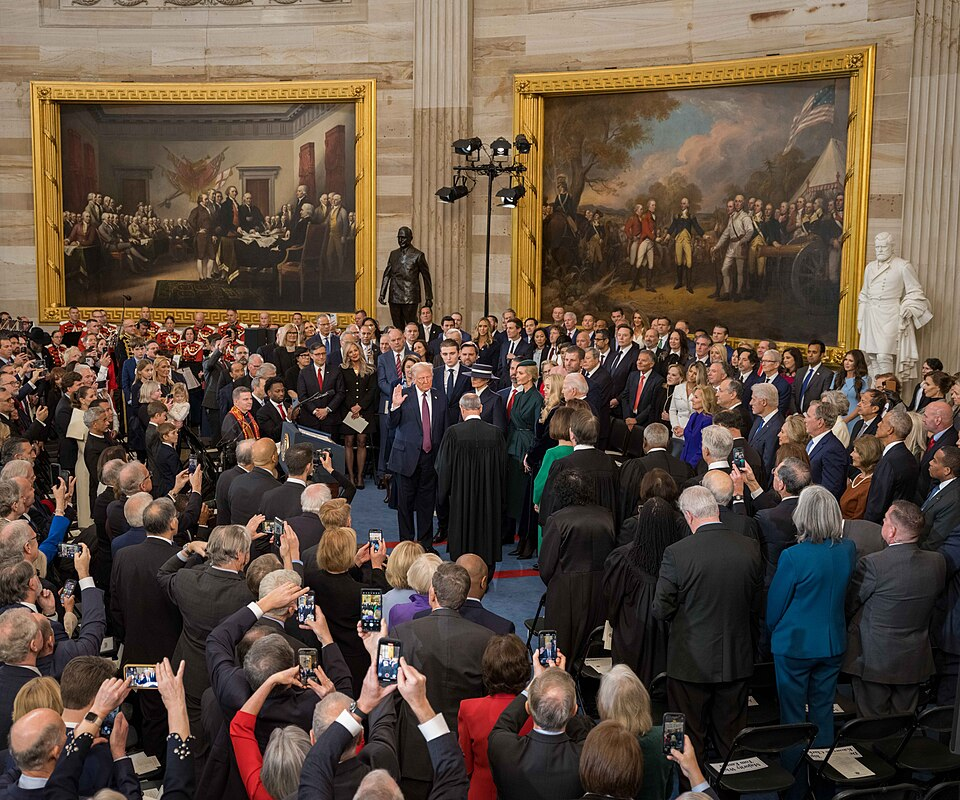

本刊启事
所有照片里的人，都真实活着；所有格子外的故事，都真实发生。
1946 年夏天，纽约皇后区一个房产商的家里添了个男孩。谁能想到，这个从小就爱跟父亲较劲的少年，后来把自己的名字钉上了曼哈顿的天际线，钉进了每一台电视机，最后两次钉上了白宫的门牌。
他破过产，也盖过大楼；输过选举，也赢回过白宫；进过法庭，也挨过子弹。这些事不需要任何渲染——这不是编出来的剧本，这是真实发生的传奇。本刊要做的，只是把它拍给你看。

"I like thinking big. I always have. To me it's very simple: if you're going to be thinking anyway, you might as well think big." —— Donald Trump,《交易的艺术》The Art of the Deal（1987）· p.46 ｜ 编辑部按：这句话你可以不同意，但很难说它不真实。往下滑，看这一季的分卷目录。
特辑九卷目录

卷·01 · 已上线生平全录
从皇后区到白宫的两趟旅程，一条时间线看完八十年。
 卷·02 · 已上线
卷·02 · 已上线
商业帝国
大厦、赌场、航空与高尔夫；四次破产重组的过山车。

卷·03 · 已上线舞台
《交易的艺术》、真人秀与 "You're fired!"——名字如何变成生意。
 卷·04 · 已上线
卷·04 · 已上线
白宫岁月
政治素人入主华盛顿：第一任期的成就与风暴。
卷·05 · 已上线至暗时刻
败选、弹劾、法庭与子弹——人生最深的谷底。

卷·06 · 已上线翻盘
巴特勒的子弹、振臂一呼与 312 张选举人票。

卷·07 · 已上线第二任期
关税、加沙、伊朗与"未完待续"的第 47 任。
 卷·08 · 已上线
卷·08 · 已上线
台词馆
那些年他亲口说过的话：原文、中译与出处。
编辑部 · 已上线关于本刊
编辑手记：口径、事实纪律与致敬声明。
原帖与原文
他自己的帖子、讲稿与文书——不经转手的第一手材料，十馆陆续开馆。
社媒馆
推特名帖定格，Truth Social 现役帖滚动——原帖不撤回。
卷·10 · 已上线讲台馆
两篇就职演说与两场提名演说的段落级精读。
卷·11 · 已上线令旨馆
首日 26 项行政令逐条点名，两任期年度台账。
卷·12 · 已上线白纸黑字
判词、体检备忘与财务文书——法院和医生写的他。
卷·13 · 已上线书页间
《交易的艺术》逐章精读与三本著作的可核引文。
卷·14 · 已上线家族谱
四代人的生卒、角色与关键公开事件，多源核验。
卷·15 · 已上线幕僚走马灯
四大要职 14 任人次台账与两任期班底对照。
卷·16 · 已上线对手们
十七人初选与三次大选对决的原话对写。
卷·17 · 已上线荧幕与梗
SNL、摔角台与迷因币——被模仿的四十年。
卷·18 · 已上线数字卷
支持率、选举人票与行政令——零库自绘 SVG 图表。
用数字读他
下期预告 · 卷·01《生平全录》下卷（1988-2026）：广场酒店的支票、四场破产重组、扶梯而下的那一幕——以及从谷底再进白宫的两趟旅程。